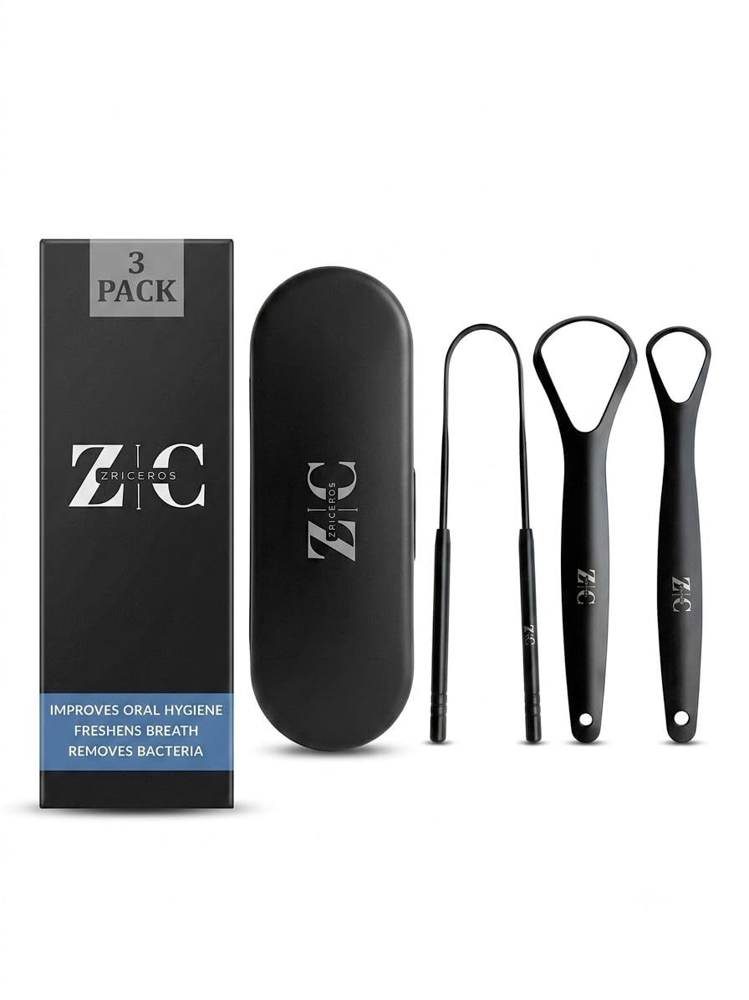
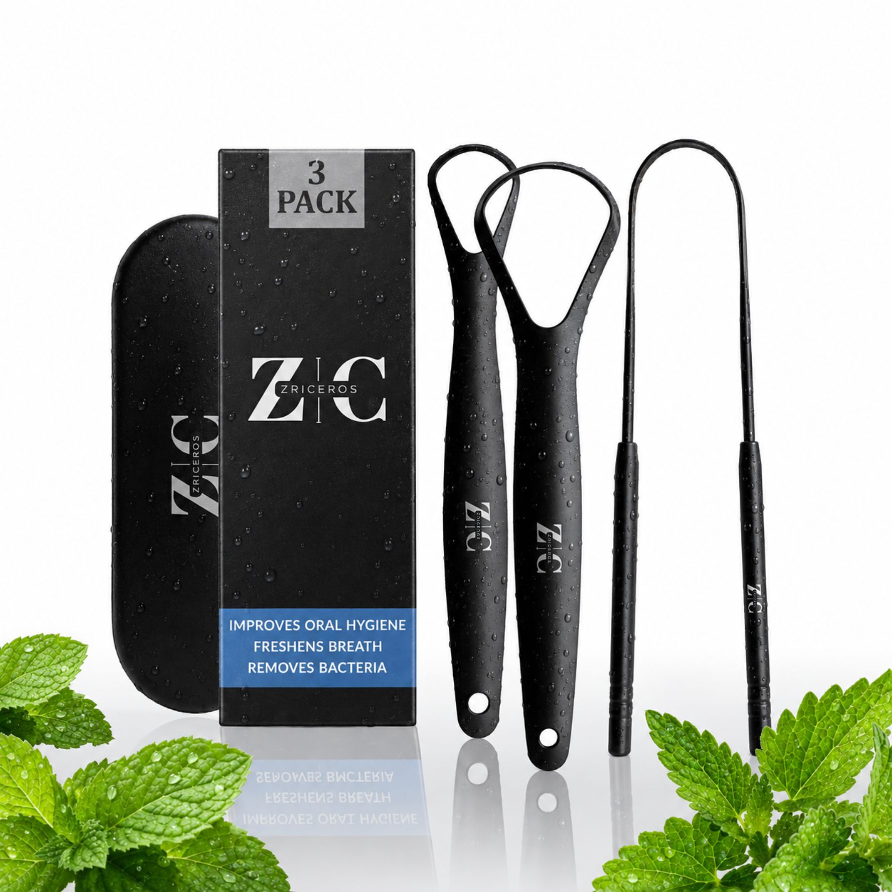
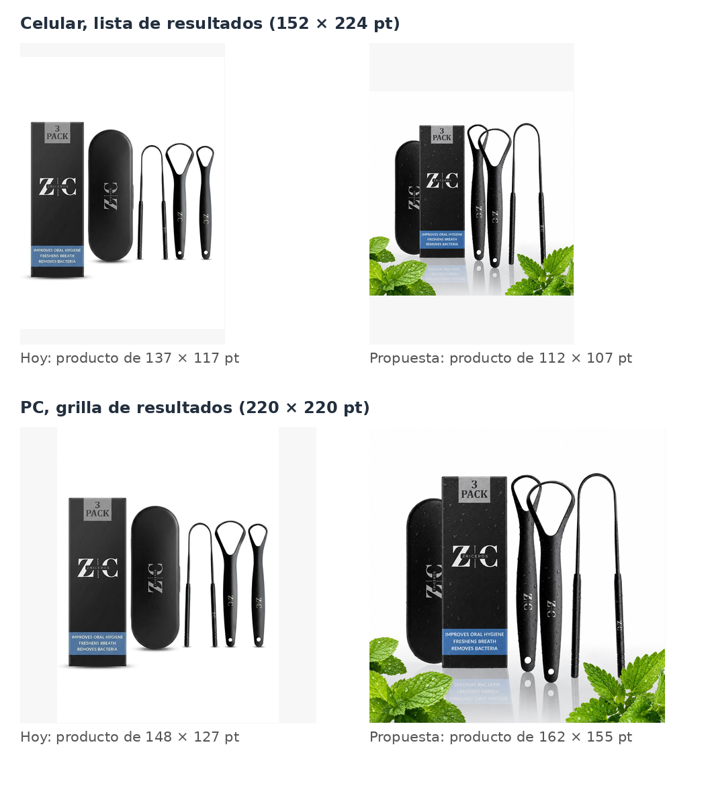

| Semana 1 | Semana 2 | Semana 3 | Semana 4 | Semana 5* | Acumulado | |
|---|---|---|---|---|---|---|
| Gasto | $18,66 | $75,19 | $92,32 | $85,12 | $87,92 | $359,21 |
| Clics | 11 | 34 | 53 | 56 | 91 | 245 |
| CPC | $1,70 | $2,21 | $1,74 | $1,52 | $0,97 | $1,47 |
| Pedidos | 4 | 5 | 9 | 1 | 6 | 25 |
| Unidades | 5 | 5 | 9 | 1 | 6 | 26 |
| Ventas | $99,45 | $99,45 | $179,01 | $19,89 | $119,34 | $517,14 |
| Conversión (pedidos / clics) | 36,4% | 14,7% | 17,0% | 1,8% | 6,6% | 10,2% |
| ACoS | 18,8% | 75,6% | 51,6% | 428% | 73,7% | 69,5% |
| Ganancia neta | +$26,34 | −$30,19 | −$11,32 | −$76,12 | −$33,92 | −$125,21 |
| Impresiones | 2.046 (panel) | 4.080 o más | 10.485 o más | 6.910 o más | 11.999 o más | — |
| CTR | 0,54% | 0,83% o menos | 0,51% o menos | 0,81% o menos | 0,76% o menos | — |
El CPC más bajo desde el lanzamiento, y la semana igual pierde. Pagar menos por clic ya no alcanza: dos tercios de la plata ($57,77 de $87,92) fue a clics en fichas ajenas, que trajeron una venta.
El informe de términos dice en cada línea qué disparó el anuncio: una búsqueda que alguien tipeó, o un ASIN, que es la ficha de otro producto en la que apareció. Separadas así, las cinco semanas cuentan otra historia que separadas por campaña:
| Dónde salió | Campaña | Clics | Pedidos | Conversión | CPC | Gasto | ACoS | Neto |
|---|---|---|---|---|---|---|---|---|
| Búsquedas | automática | 58 | 8 | 13,8% | $0,94 | $54,66 | 34,4% | +$17,34 |
| Búsquedas | PRIMALS | 42 | 8 | 19,0% | $2,37 | $99,40 | 55,5% | −$18,40 |
| Fichas ajenas | automática | 70 | 2 | 2,9% | $0,89 | $62,56 | 157% | −$44,56 |
| Fichas ajenas | PRIMALS | 75 | 7 | 9,3% | $1,90 | $142,59 | 102% | −$79,59 |
| Búsquedas | las dos | 100 | 16 | 16,0% | $1,54 | $154,06 | 45,6% | −$1,06 |
| Fichas ajenas | las dos | 145 | 9 | 6,2% | $1,41 | $205,15 | 115% | −$124,15 |
No es azar. Si las fichas ajenas convirtieran como las búsquedas (16%), sacar 9 pedidos o menos en 145 clics pasaría 3 veces cada diez mil. Y la diferencia aparece en las dos campañas por separado: en la automática, 13,8% contra 2,9%.
Por qué pasa. El que busca «tongue scraper» quiere un raspador y todavía no eligió. El que está mirando la ficha de otro raspador ya eligió uno, en general más barato: de las 28 fichas ajenas donde salió la automática esta semana, 8 cuestan menos de $7 (dos de ellas son estuches solos). La semana 3 había visto que las fichas caras sí convertían en PRIMALS (18%), pero con cinco semanas PRIMALS queda en 9,3% en fichas ajenas: su equilibrio es $0,84 por clic, y pagaba $1,90.
Qué cambia esto. En la automática, las fichas ajenas no salen de la puja general sino de dos de sus cuatro grupos de segmentación, Sustitutos y Complementos, que se apagan por separado. Las búsquedas salen de los otros dos, Coincidencia cercana y Coincidencia amplia. Es el paso 1, y reemplaza a la lista de seis productos negativos de la semana 4: en vez de cerrar fichas de a una, se cierra la puerta por la que entran todas.


Lo que el diseñador mejoró, y es mucho. El negro mate con gotas se ve caro: separa a Zriceros de los raspadores de acero brillante de $4 a $6, que es justo lo que la ficha tiene que explicar. Los tres raspadores se ven más grandes que hoy y bien separados, el «3 PACK» se lee y la resolución alcanza para el zoom. Como foto de producto es mejor que la que hay.
Lo que no mejora: la entrada desde el celular. El objetivo era más clics desde los resultados de búsqueda, y ahí lo que cuenta es qué tan grande se ve el producto en la miniatura. Simulada en los dos lugares donde se muestra:

| Hoy | Propuesta | Lo que se pidió (sem. 3 y 4) | |
|---|---|---|---|
| Formato | 896 × 1195 vertical | 1787 × 1787 cuadrada | 1600 × 2000 vertical (4:5) |
| Producto en el alto del cuadro | 58% | 71% | 85% o más |
| Producto en el ancho del cuadro | 90% | 74% | — |
| Producto en la miniatura del celular | 137 × 117 pt | 112 × 107 pt (−25%) | ≈ 125 × 160 pt (+25%) |
| Producto en la grilla de PC | 148 × 127 pt | 162 × 155 pt (+34%) | ≈ 145 × 185 pt (+43%) |
| Fondo | blanco | 254 arriba, piso gris 225–231 abajo; 6% de los píxeles es blanco puro | 255, 255, 255 |
| Cosas que no vienen en la caja | ninguna | hojas de menta | ninguna |
| Estuche | entero, al lado de la caja | tapado por la caja; se ve una franja | entero, arriba |
Por qué el celular pierde. La casilla del celular es alta y angosta. Una imagen cuadrada ocupa todo el ancho y deja vacío arriba y abajo, y dentro del cuadrado el producto ocupa 74% × 71%: queda más chico que el de hoy, que es vertical. En la grilla de PC, que es cuadrada, pasa lo contrario. La mayor parte del tráfico de Amazon viene del celular, y la captura que se usó para medir la casilla también es de un celular.
El riesgo de subirla así. Amazon pide para la imagen principal fondo blanco puro (255, 255, 255), el producto ocupando el 85% del cuadro y nada que no venga en la compra. Las hojas de menta, el piso gris con reflejo y el 71% no cumplen ninguna de las tres. Una imagen principal fuera de norma se puede rechazar al subirla, o pasar y después dejar la ficha suprimida de la búsqueda hasta que se cambie: lo contrario de más visitas. Las gotas de agua no son problema: están sobre el producto.
La propuesta no se descarta: va de segunda imagen. Las imágenes 2 a 7 admiten fondo, ambiente y elementos que no vienen en la caja. Tal como está, es la mejor imagen secundaria que tiene la ficha, y es la que se ve apenas el comprador desliza.
| Lo que se pidió | Estado | Cómo se sabe |
|---|---|---|
| Pausar PRIMALS | Sí | Sus 8 líneas terminan entre el 28-09 y el 01-10. Cuatro días: 13 clics, $15,03, una venta, todos los clics a $1,20 o menos. |
| La semana 4 desde el informe comercial | Ya no hace falta | La pregunta era si la ficha vende. La contestó la automática sola: 5 pedidos, y 16% en búsquedas. |
| Seis productos negativos en la automática | No se ve | B0C8ZCY2WM, el 3 pack de $5,99, sigue saliendo hasta el 06-10. Que los otros cinco no aparezcan no distingue un negativo de una semana sin esa ficha. Queda reemplazado por el paso 1. |
| Reseñas a los pedidos de la semana 1 antes del 3-10 | Registro vacío | datos/resenas_solicitadas.csv sigue sin filas. A esos pedidos ya se les fue el botón; llegó una calificación más (7). |
| No tocar puja ni presupuesto de la automática | Sí | $1,00 justo en 26 líneas, como antes; gastó 58% del tope. |
| Imagen principal vertical | En preparación | Llegó la propuesta del diseñador (sección 4). La ficha sigue con 51MqYyt1dBL. |
| Campaña manual en exacta | En espera, como se pidió | El informe trae las mismas dos campañas. |
| El CSV de la semana 5 | Sí | Con nueve días en vez de siete; es el de esta hoja. |
| Campaña | Clics | Pedidos | Conversión | CPC | Gasto | ACoS | Neto |
|---|---|---|---|---|---|---|---|
| PRIMALS (pausada el 1-10) | 117 | 15 | 12,8% | $2,07 | $241,99 | 76,0% | −$97,99 |
| Automática | 128 | 10 | 7,8% | $0,92 | $117,22 | 58,9% | −$27,22 |
| Las dos | 245 | 25 | 10,2% | $1,47 | $359,21 | 69,5% | −$125,21 |
La automática, que la semana pasada estaba en +$0,67, pasa a −$27,22. Su semana fue +$7,05 en búsquedas y −$34,94 en fichas ajenas.
puja máxima = contribución ($9,00) × conversión
| Con la conversión de… | Equilibrio (ACoS 45,2%) | Objetivo (ACoS 30%) | Paga hoy |
|---|---|---|---|
| Búsquedas, las dos campañas (16,0%, 100 clics) | $1,44 | $0,95 | $0,97 |
| Búsquedas de la automática (13,8%, 58 clics) | $1,24 | $0,82 | $0,96 |
| Fichas ajenas, las dos (6,2%, 145 clics) | $0,56 | $0,37 | $0,96 |
| Fichas ajenas de la automática (2,9%, 70 clics) | $0,26 | $0,17 | $0,92 |
En las búsquedas, $1,00 está bien puesto: entre el objetivo y el equilibrio. En las fichas ajenas no hay puja que sirva: a $0,26 no se gana ninguna subasta. Por eso el paso 1 es apagarlas y no bajarles la puja.
Las búsquedas. 31 clics, 5 pedidos, +$14,85.
| Término | Camp. | Impr. | Clics | Gasto | Unid. | Lectura |
|---|---|---|---|---|---|---|
| tongue scraper | auto | 3.361 | 15 | $14,53 | 2 | CTR 0,45% (sem. 3: 0,41%; sem. 4: 0,56%) · 13% de conversión |
| tongue scraper for adults | auto | 154 | 3 | $3,00 | 1 | empieza igual que el título de la ficha |
| custom tongue scraper | auto | 1 | 1 | $1,00 | 1 | 5-10 |
| tongue scraper | PRIMALS | 104 | 1 | $1,20 | 1 | antes de la pausa; la negativa de esa búsqueda no estaba activa |
| tongue cleaner | auto | 188 | 1 | $0,99 | 0 | vendió en la semana 3 |
| tung scraper | auto | 45 | 1 | $0,77 | 0 | la marca Tung, mal escrita |
Las fichas ajenas. 60 clics en 35 fichas, 1 pedido, −$48,77. Precios leídos de amazon.com el 10-10.
| Ficha | Precio | Camp. | Impr. | Clics | Gasto | Unid. |
|---|---|---|---|---|---|---|
| «Tongue Scraper, Stainless Steel…» B0H8T6KG6N | sin precio visible | auto | 5.907 | 14 | $11,67 | 1 |
| EZ COZY 2 pack con estuche B0BZTVJ744 | $3,89 | auto | 321 | 4 | $4,00 | 0 |
| MasterMedi multicolor 2 unid. B01LAY47D0 | $9,95 | auto | 447 | 3 | $3,00 | 0 |
| Mouthology cobre 2 pack B0CZTZMSHG | $9,99 | PRIMALS | 6 | 3 | $3,60 | 0 |
| TheraBreath, enjuague bucal B00IRKRK9O | $16,97 | PRIMALS | 267 | 3 | $3,13 | 0 |
| 3 capas B0G3GW139J | $9,87 | PRIMALS | 7 | 2 | $2,40 | 0 |
| 3 pcs acero B08DY7J8Z9 | $3,99 | auto | 104 | 2 | $1,52 | 0 |
| 2 pack con estuches B0FPGPY7JV | $12,99 | auto | 97 | 2 | $1,83 | 0 |
Las fichas caras tampoco salvan a la automática. Esta semana tuvo 8 clics en fichas de más de $12 y ninguna venta. No hay forma de quedarse sólo con las buenas desde la automática, que no deja elegir en qué ficha salir.
| Escenario | Publicidad por unidad | ACoS | Publicidad total | Neto del ciclo | Sobre el capital* |
|---|---|---|---|---|---|
| Como las cinco semanas juntas | $13,82 | 69,5% | $13.816 | −$4.816 | −140% |
| Equilibrio | $9,00 | 45,2% | $9.000 | $0 | 0% |
| Sólo búsquedas, las dos campañas | $9,06 | 45,6% | $9.062 | −$62 | −2% |
| Sólo búsquedas de la automática | $6,83 | 34,4% | $6.833 | +$2.167 | +63% |
| ACoS objetivo del 30% | $5,97 | 30,0% | $5.967 | +$3.033 | +88% |
Por primera vez hay un escenario medido que gana plata con margen: la automática sólo en búsquedas, con 58 clics (arriba del mínimo de ~40 para confiar en una conversión). Es lo que deja el paso 1.
El límite ahora es el volumen. Sin las fichas ajenas, la automática hace unos 23 clics de búsqueda por semana y 3 pedidos. Para vender más con publicidad que gana plata hay dos palancas: que más gente toque el anuncio (la imagen) y más búsquedas donde mostrarse (la campaña manual, paso 4). Más presupuesto no es una de ellas: la automática usa 58% de su tope.
| Campaña | Tope del plan | Gasto/día, sem. 4 | Gasto/día, sem. 5 | Uso del tope |
|---|---|---|---|---|
| Automática | $14,00 | $2,68 | $8,10 | 58% |
| PRIMALS | $8,00 | $9,48 | $3,76 (4 días, pausada) | — |
| Total | $22,00 | $12,16 | $9,77 | 44% |
Con Sustitutos y Complementos apagados, la automática debería volver a unos $3 por día, lo que gastó esta semana en búsquedas. La manual del paso 4 suma hasta $5.
| Predicción | Real | Lectura |
|---|---|---|
| Líneas de PRIMALS: 0 | 8 | la pausa llegó el 1-10; desde ahí, ninguna |
| Gasto total: $15 a $25 | $87,92 | nueve días, y la automática heredó las subastas de PRIMALS |
| Clics de la automática: 15 a 25 | 78 | 48 de ellos en fichas ajenas |
| Pedidos de la automática: 2 o más | 5 | se cumplió: la ficha vende; la semana 4 fue un accidente |
| Fichas de menos de $7 en la automática: 0 | 8 | los negativos no se ven; el paso 1 los vuelve innecesarios |
| Ganancia neta: −$15 a +$10 | −$33,92 | las búsquedas dejaron +$14,85; las fichas ajenas, −$48,77 |
| Calificaciones: más de 6 | 7 | se cumplió |
La hoja de la semana 4 decía que la fila que importa es la de pedidos de la automática, y dio. Lo que no previó es que la automática sola, con más subastas, iba a gastar la mitad en fichas ajenas.
La estrategia, en una línea: anunciar sólo donde alguien está buscando, y hacer que en esa búsqueda nos toquen más. Eso ordena todo lo que sigue. El paso 1 corta lo que pierde plata (las fichas ajenas). El 2 sube los clics sobre las mismas impresiones (la imagen). El 3 sube la conversión de la ficha (las reseñas). El 4 suma búsquedas nuevas a una puja que deja ganancia. El precio se queda en $19,89: en las búsquedas convierte 16%, así que no es lo que frena.
Cambios respecto de la semana 4: los seis productos negativos quedan reemplazados por apagar Sustitutos y Complementos, y la campaña manual en exacta sale de la espera, con puja de $1,00 en vez de $1,20.
| Dónde | Campaign Manager → Campaña - 9/1/2026 automatica → Grupo RASPADOR - 9/1/2026 → Segmentación. Ahí están los cuatro grupos de la segmentación automática, cada uno con su interruptor y su puja. |
|---|---|
| Qué hacer | Pausar Sustitutos y Complementos. Dejar prendidos Coincidencia cercana y Coincidencia amplia, a $1,00. |
| Por qué | En la automática, las fichas ajenas convierten 2,9% (2 pedidos en 70 clics) y dejan −$44,56; las búsquedas, 13,8% y +$17,34. Esta semana las fichas se llevaron $43,94 de los $72,89 de la automática. Con los negativos se cerraban fichas de a una, y siempre aparecen otras: esta semana fueron 28 distintas. |
| Qué no hacer | No bajarles la puja en vez de apagarlas: su equilibrio es $0,26, y a ese precio no se gana ninguna subasta. Tampoco reactivar PRIMALS: en búsquedas convertía igual, pero pagaba $2,37 el clic. |
| Cómo se verifica | El informe de la semana 6 casi no trae ASIN en la automática (alguno puede quedar de Coincidencia amplia, que a veces sale en fichas), y su gasto baja a unos $3 por día. |
| Qué hacer | No subir la propuesta como imagen principal. Mandarle al diseñador la lista de la sección 4: 1600 × 2000, fondo 255, sin menta, estuche arriba y raspadores abajo, sin la caja, producto en 85% del alto, el mismo acabado. |
|---|---|
| Mientras tanto | Su propuesta, tal cual, puede subir ya como imagen 2 (Seller Central → Catálogo → Editar → Imágenes). Las secundarias admiten fondo y ambientación, y no cambia lo que se mide, que es la miniatura. |
| Por qué | Con «tongue scraper» la automática tiene 3.361 impresiones en nueve días y un CTR de 0,45%. Llevarlo a 0,8% son casi el doble de clics en la búsqueda que mejor convierte, sin pagar más por clic. Y es el único argumento que tiene la miniatura frente a los 3 pack de $3,99 y $5,99. |
| Qué no hacer | No subir la cuadrada «para probar»: en el celular achica el producto, y con las hojas de menta y el fondo gris arriesga que la ficha quede suprimida de la búsqueda. |
| Cómo se verifica | La ficha devuelve otro archivo en
landingImage, de 1600 × 2000. Desde la semana en que cambia,
el CTR de «tongue scraper» en la automática, contra 0,45%. |
| Dónde | Seller Central → Pedidos → abrir el pedido → Solicitar una reseña. |
|---|---|
| Qué hacer | Primero los del 7 al 13 de septiembre: entregados
hace unos 30 días, el botón les desaparece estos días. Después los del 14 en
adelante. A los de la semana 1 ya no les aparece. Cada uno, una fila en
datos/resenas_solicitadas.csv y después
/usr/bin/python3 scripts/resenas.py. |
| Por qué | Siete calificaciones de 5,0 en 25 pedidos de publicidad: las estrellas ya se ven en la miniatura y cada una más mueve la conversión de la ficha entera, no sólo la de los anuncios. |
| Cómo se verifica | El resumen del registro, debajo, deja de estar vacío. |
| Dónde | Campaign Manager → Crear campaña → Sponsored Products → Segmentación manual → Segmentación por palabra clave. |
|---|---|
| Qué poner | Concordancia exacta, puja
$1,00, presupuesto $5 por día, sin ajuste de
ubicación:
|
| Por qué ahora y a $1,00 | Se esperaba que volviera la conversión, y volvió: 16% en búsquedas. Con esa conversión el objetivo de 30% es $0,95 y el equilibrio $1,44; $1,20 era la cuenta con el 18% de la semana 3. Con la automática sin fichas ajenas, esta es la forma de sumar búsquedas sin pagar por mirar otras fichas. |
| Qué no hacer | No sumar «tongue scraper», «tongue scraper for adults» ni «tongue cleaner»: venden en la automática a menos de $1,00 y ponerlas en otra campaña es pagarse el clic a uno mismo. |
| Cómo se verifica | La campaña nueva aparece en el informe de la semana 6. Un término sin impresiones a $1,00 es un dato (esa búsqueda cuesta más de lo que vale), no un error. |
| Qué hacer | Dejar Coincidencia cercana y amplia en $1,00. |
|---|---|
| Por qué | Pagan $0,96 con un equilibrio de $1,24: ganan plata. Es la parte del proyecto que funciona, y la base contra la que se va a medir la imagen. |
| Qué | Campaign Manager → Informes → Términos de búsqueda de Sponsored Products, del 7 al 13 de octubre: siete días, para que se compare con las demás. |
|---|---|
| Dónde | smb://SRVNVIDIA._smb._tcp.local/shared/amazon/,
como siempre. |
| Semana 5 (real, 9 días) | Semana 6 (si esto funciona) | Si no da eso, qué significa | |
|---|---|---|---|
| Clics en fichas ajenas, automática | 48 | 0 a 3 | Sustitutos o Complementos siguen prendidos |
| Clics de búsqueda, automática | 30 | 18 a 30 | menos de 15: las negativas de la manual le sacaron más de lo previsto |
| Pedidos de búsqueda, automática | 4 | 2 o más | 0 en unos 25 clics pasa 2 veces cada cien con su conversión: volver a mirar la ficha |
| Gasto de la automática | $72,89 | $18 a $30 | — |
| Manual exacta: términos con impresiones | — | 4 o más de 7 | si son menos, a $1,00 esas búsquedas no se ganan |
| CTR de «tongue scraper», automática | 0,45% | igual mientras siga la imagen de hoy | desde que esté la nueva: 0,8% o más |
| Ganancia neta | −$33,92 | −$10 a +$15 | — |
| Calificaciones de la ficha | 7 | 8 o más | — |
La fila que importa es la primera. Si las fichas ajenas desaparecen y las búsquedas siguen convirtiendo, el proyecto deja de perder plata por primera vez desde la semana 1.